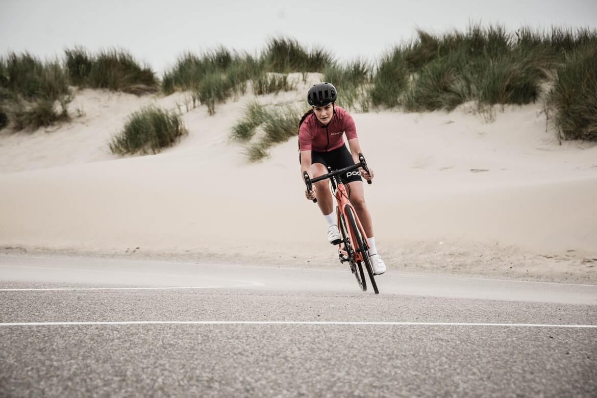
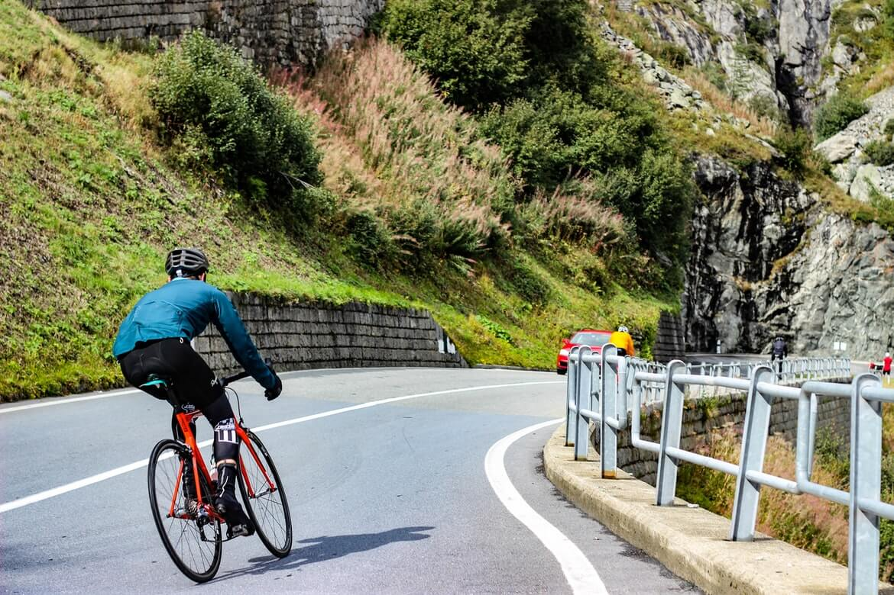
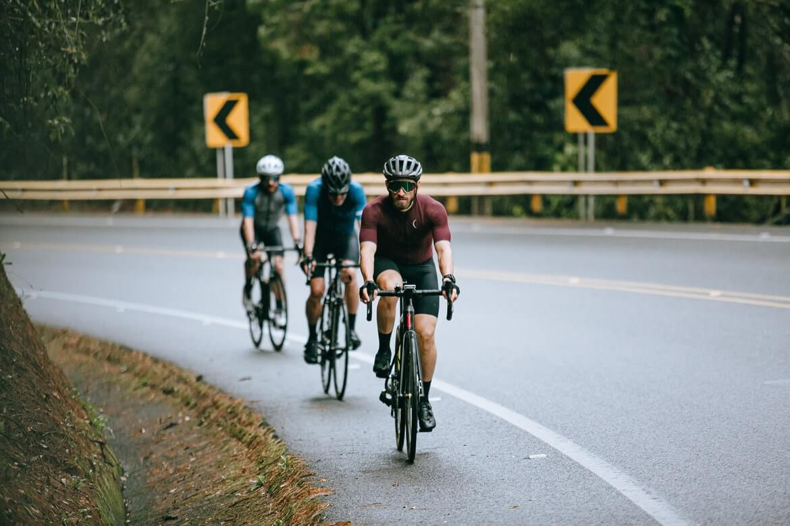
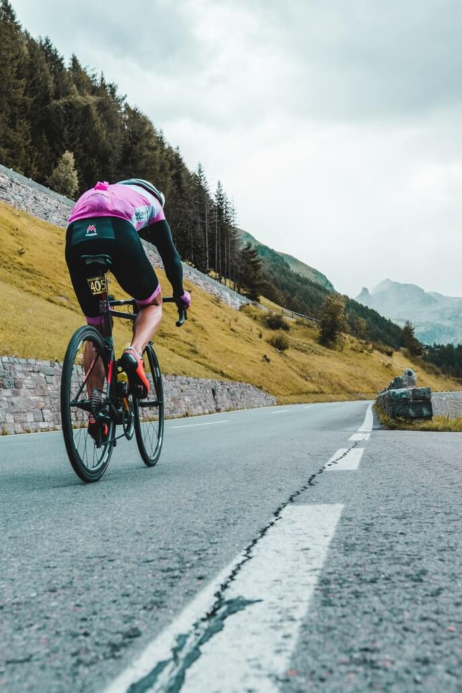
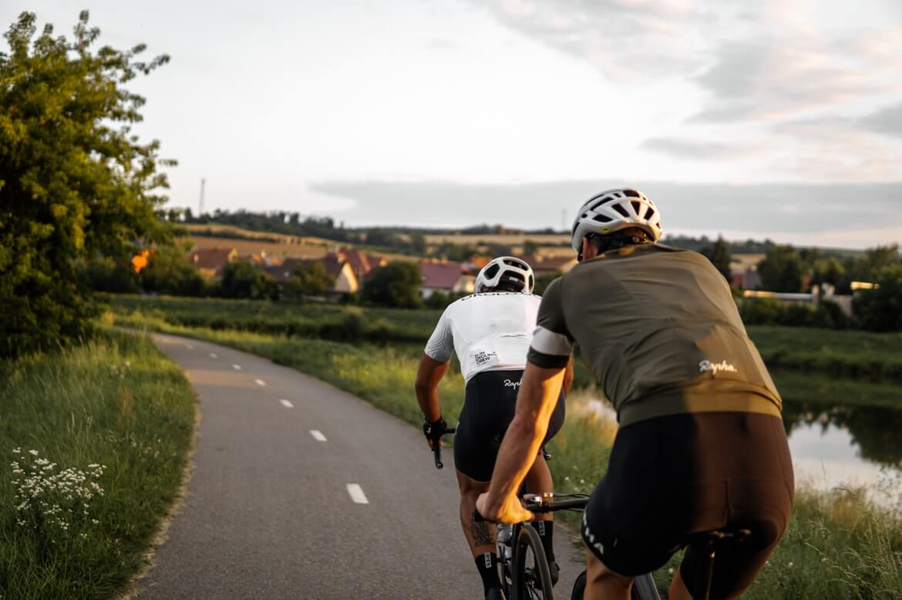
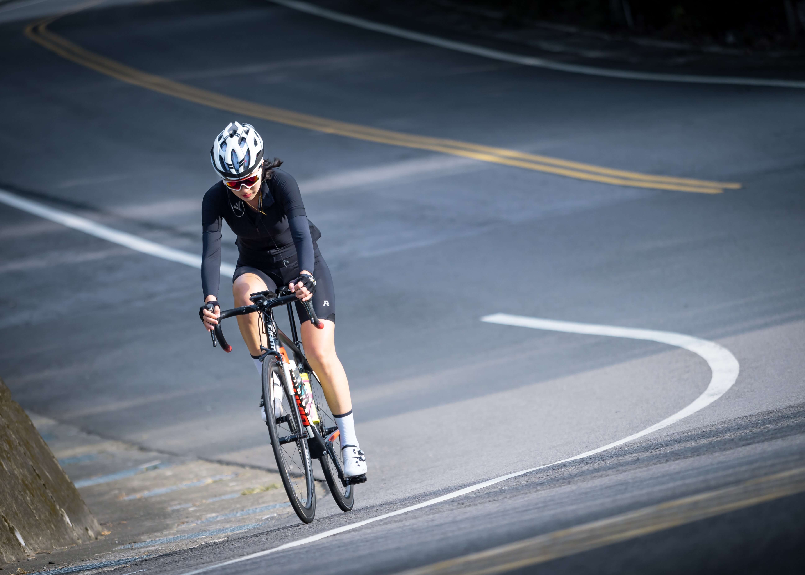

體驗自由與速度的旅程
 找路線
找路線
How does it work
如何展開一場單車之旅
規劃旅程
透過探索地圖找到目的地
搭配周遭美食景點規劃完整行程
確認租借站點
確認附近的Ubike站點
租借車輛是否足夠
確認租借站點
收拾裝備，穿上運動鞋
展開一場單車之旅
規劃旅程
透過探索地圖找到目的地
搭配周遭美食景點規劃完整行程
確認租借站點
確認附近的Ubike站點
租借車輛是否足夠
確認租借站點
收拾裝備，穿上運動鞋
展開一場單車之旅
Looking for inspiration
推薦單車路線

臺中市
大安濱海自行車道
width 26km

新北市
二重環狀自行車道
width 20km

宜蘭縣
三奇稻間美境
width 2.4km

高雄市
中央公園自行車道
width 0.6km

中港溪線車道
width 17km

花蓮縣
佳林村自行車道
width 1.1km